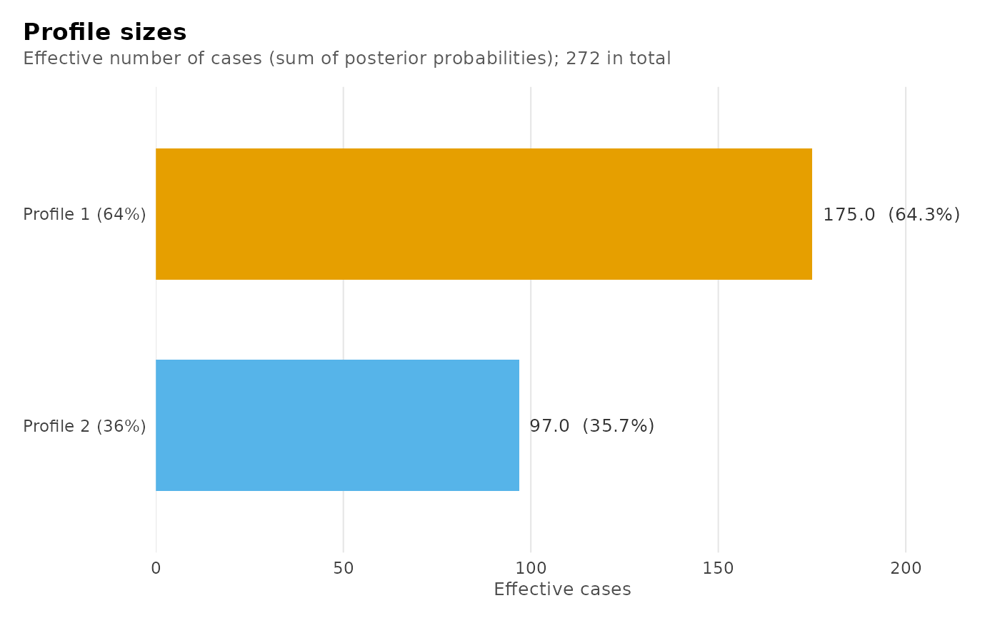
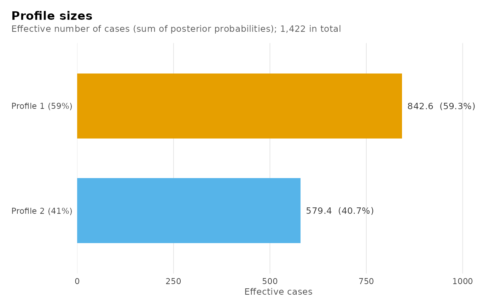
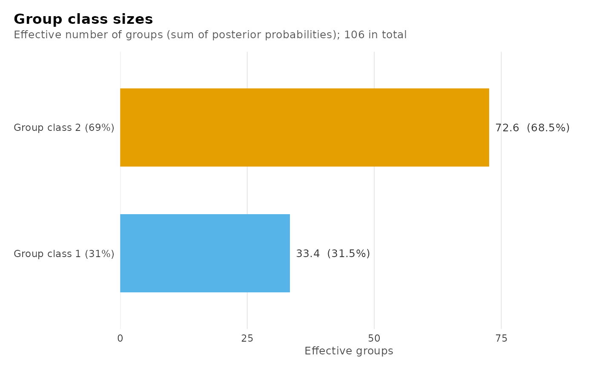
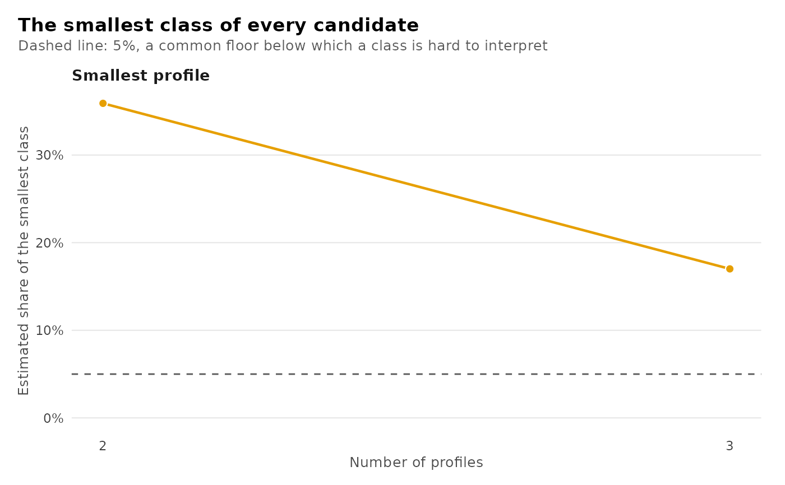

Plot how many units each class holds, or the size of the smallest class of every candidate in a grid
Source:R/wildcards.R
plot_sizes.Rdplot_sizes() plots how many units belong to each class of a fitted model,
as bars, or how large the smallest class of every candidate of an enumeration
grid is, as a line.
Arguments
- x
One of:
a fitted model of any family: from
lpa(),lca(),multilpa(),multilca(),lta()ormixture_regression(). This covers fits with covariates, growth mixtures, and the additive and cross-level families ofmultilpa();an enumeration grid from
enumerate_lpa(),enumerate_lca(),enumerate_classes()orenumerate_regressions(). A grid of group-class families (enumerate_classes(family = )) has no such view and is refused;a
diagnostics()result, which is drawn from the fit it checked.
- main, subtitle
Title and subtitle of the plot.
NULL(default) keeps the view's own text. When two plots are returned, both get the same title and subtitle.
Value
A ggplot object. A fit that classifies at both levels returns a
latents_plots list of two ggplot objects named individuals and
groups; printing the list draws both.
Errors:
latents_nothing_to_plotwhen the package returnedxbut this function has no plot of it: a grid of group-class families, a grid in which no converged candidate has two or more classes, pooled imputations, a comparison, a bootstrap result or a sensitivity analysis. For an object of the wrong kind, the message names the plot functions that apply to it;latents_not_a_fitwhenxis not a fit, grid or other result of the package, for example a data frame;latents_missing_packagewhen ggplot2 is not installed.
Details
A fitted model. One horizontal bar per class, the largest at the top. The length of a bar is the effective number of units in the class: the sum of the units' posterior probabilities of that class. Each bar is labelled with that number and its share of the total, and each class has its own colour.
A fit classifies at one or two levels. The individual level sorts the
cases (rows) into profiles or classes. The group level sorts the groups
(the persons, for example) into group classes. A fit with two or more
group classes besides its profiles is drawn at both levels, as two plots.
An additive fit and a mixture regression with class_level = "group"
classify the groups only and give one plot. A fit with a noise component
draws the sizes of its profiles; the noise cases are left out of the bars
and a caption says so.
An enumeration grid. The x-axis is the number of classes, the y-axis the estimated share of the smallest class of each candidate. There is one line per number of group classes, and per covariance structure when the grid has several. A dashed line marks 5%. A grid with group classes has a second panel for the smallest group class.
See also
get_classification() for the sizes as a table;
plot_posteriors(), plot_entropy(), plot_avepp().
Examples
fit <- lpa(faithful, c("eruptions", "waiting"), n_profiles = 2,
n_starts = 2, seed = 1)
plot_sizes(fit)

# Two levels: profiles of the rows and group classes of the students
two_level <- multilpa(course_engagement, c("browse", "lectures", "forum_read"),
"student", n_profiles = 2, n_group_classes = 2,
n_starts = 2, seed = 1)
plot_sizes(two_level)


# A grid: the smallest class of every candidate
grid <- enumerate_lpa(faithful, c("eruptions", "waiting"),
n_profiles = 1:3, model = "EEI",
n_starts = 2, seed = 1)
plot_sizes(grid)
